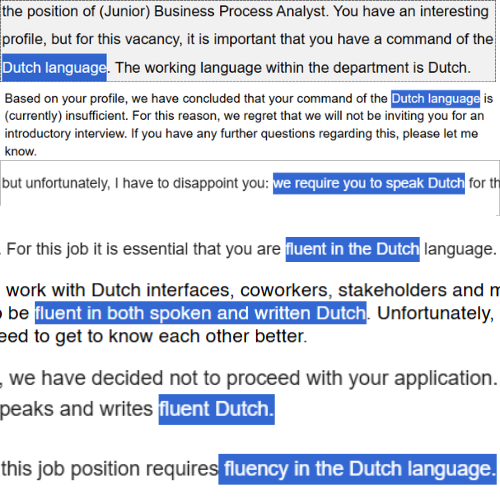

I promised a DZ-PROP-TRUTH deep-dive next. It's still coming. But this needed to be written first, because it's been the actual shape of my life since the last post, not one process, all of them, stacked on top of each other.
Some processes end in a day. Others take a month. The range I've been living in lately is three to seven rounds: a recruiter, a head of tech, a future colleague, and finally someone senior enough that the interview starts to feel less like a conversation and more like a performance review of my entire adult life.
Here is the honest tally. A good chunk of my applications ended within two days of posting. No interview, no conversation, just the door closing before I'd even finished refreshing the tab. And of everything that came back with an actual reason attached, more than 80% said the same thing.
The Number That Won't Leave Me Alone
Dutch. Not "a plus." Not "nice to have." The reason, stated plainly, over and over.

I understand it, even when it stings. A Business Analyst spends a good chunk of her working life speaking, to stakeholders, to clients, to whoever's on the other side of a requirements workshop. Being able to do that in their own language isn't a bureaucratic checkbox, it's most of the job. I can't argue with a requirement that's actually describing the work correctly.
So I started learning Dutch properly. Not the background-app-streak version I'd been doing. The real version. My goal isn't "conversational." My goal is that someone mistakes me for a local by accident, mid-sentence, before they clock the accent. XD. Every one of these rejections is fuel for that now, not just a closed door. If I'm going to build a life and a career here, speaking the language properly stops being optional the moment I decided that's actually what I want.
The Other Fifteen Percent
For the roles that don't require Dutch, roughly 15% of what I apply to, I've stopped winging it entirely. Job hunting has become my actual job. At this point I should just start my own recruitment platform and cut out the middleman.
Here's the framework, roughly:
- Map the whole process first, every round, every person I'll likely meet.
- Research the company's stated vision and values, and check honestly whether they line up with mine, not just whether they sound good on a careers page.
- Study the actual product, then figure out specifically how I'd contribute to it and where I could drive the business forward, not a generic "I'm a hard worker" angle.
- Build a knowledge base for each process and use Claude to run mock interviews against it, with proper deep-dive prep documents, not just a skim the night before.
The part I like most: I end up acting as a Business Analyst even while I'm trying to get hired as one. When I'm talking to a business manager, I speak in metrics, frameworks, business impact, stakeholders. When I'm talking to someone technical, I switch, dashboards, Python, datasets, pipelines, infrastructure. Same me, different dialect, depending on who's actually in the room. It's the job before I've been given the job.
And it works, in the sense that it gets real reactions. The feedback is almost always positive. Genuinely warm, specific, the kind of feedback that makes you start quietly picturing your desk, your onboarding week, your first Monday. My hopes climb exactly as high as the prep did.
And then the final day arrives, and it's always some version of "unfortunately." Dopamine and serotonin, both, straight down.
The Part Nobody Warns You About
Nobody tells you that the good rejections are harder than the bad ones.
A generic "we've decided to move forward with other candidates" costs nothing. You shrug, you apply to the next thing. But a month of real conversations, real prep, a genuine case of "it was this close," that one you carry around for a few days whether you want to or not. There's no clean lesson in almost. Just the knowledge that you were one specific, nameable thing away from a yes.
I know exactly what that one thing was, too. Which is almost worse. Not vague. Not "cultural fit." Specific, learnable, and simply not there yet.
Where I Am Now
Still applying. Still prepping like it's a full-time job, because right now it is one. Still hitting the same wall on 80% of what I send out, and still turning that wall into the reason I finally take Dutch seriously instead of the reason I feel sorry for myself.
The framework works. The feedback is real. What's missing is the one word at the end of the process, and that word is the whole reason I'm rebuilding my week around actually learning the language instead of just meaning to.
Next up: honestly, I don't know. XD. DZ-PROP-TRUTH is paused, not cancelled, the job hunt is the actual priority right now. I'll pick it back up once I have a job to build it around, and when I do, I'll write it properly.